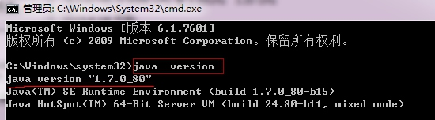

- php笔记2018
- 1 第一章:环境配置
- 2 开发工具介绍与配置
- 3 03.PHP基础语法
- 4 04.变量
- 5 05.数据类型
- 6 06.数据类型转换
- 7 07.变量与数据类型常用函数
- 8 008.常量
- 9 09.运算符
- 10 10.条件结构
- 11 11.循环结构及特殊流程
- 12 12.开启PHP的XDebug或zend_debugger配合Hbuilder进行断点调试
- 13 13.数组
- 14 14.九大超全局数组
- 15 15.函数
- 16 16.常用函数
- 17 17.面向对象
- 18 18.Trait
- 19 19.namespace命名空间
- 20 020.自定义分页类
- 21 021.PHP操作数据库
- 22 022.错误报告级别设置及自定义处理函数
- 23 23.异常处理类 Exception
- 24 24.文件系统
- 25 025.文件的上传与下载
- 26 026.GD库的使用-图片处理及验证码
- 27 027.版本控制-SVN
- 28 028.版本控制-GIT
- 29 029.日期与时间
- 30 30.PHP字符串处理与正则表达式
- 31 032.XML操作
- 32 031.邮件与短信发送
- 33 033.在线支付
- 34 033.HTML协议
- 35 034.会话控制之-Cookei
- 36 035.会话控制之-Session
- 37 036.缓存之-Memcache
- 38 041.redis01-下载安装启动
- 39 042.redis-对于KEY的操作命令(公共命令)
- 40 043.Redis字符串类型的操作
- 41 044.redis-link链表结构(就像自动整理索引值的索引数组. 下标 到 len-1)
- 42 045.redis-set无序集合
- 43 039.配置Apache2.4+PHP7.3+多站点
- 44 MySQL笔记
- 45 ThinkPHP3.1.2笔记
-
46 bootstrap笔记
- 46.1 01. Bootstrap 介绍
- 46.2 Bootstrap 排版样式
- 46.3 03. Bootstrap 表格和按钮
- 46.4 Bootstrap 栅格系统
- 46.5 04. Bootstrap 表单和图片
- 46.6 辅组类和响应式工具
- 46.7 图标菜单按钮组件
- 46.8 输入框和导航组件
- 46.9 路径分页标签和徽章组件
- 46.10 巨幕页头缩略图和警告框组件
- 46.11 进度条媒体对象和Well组件
- 46.12 列表组面板和嵌入组件
- 46.13 模态框插件
- 46.14 下拉菜单和滚动监听插件
- 46.15 标签页和工具提示插件
- 46.16 弹出框和警告框插件
- 46.17 按钮和折叠插件
- 46.18 轮播插件
- 46.19 附加导航插件
- 47 es6
-
48 jquery笔记
- 48.1 jQuery-UI 知问前端--cookie 插件
- 48.2 01.JQUERY入门
- 48.3 02.jQuery基础核心
- 48.4 03.jQuery常规选择器
- 48.5 04.jQuery过滤选择器
- 48.6 05. 基础DOM和CSS操作
- 48.7 06.jQuery DOM节点操作
- 48.8 07. jQuery表单选择器
- 48.9 jQuery基础事件
- 48.10 09. jQuery事件对象
- 48.11 10. jQuery高级事件
- 48.12 11.jQuery动画效果
- 48.13 12.jQuery-Ajax
- 48.14 13. jQuery-Ajax 进阶
- 48.15 14. jQquery工具函数
- 48.16 15. jQuery 插件
- 48.17 jQuery-UI 概述及下载安装
- 48.18 jQuery-UI 知问前端--创建 header 区
- 48.19 jQuery-UI 知问前端--对话框UI
- 48.20 jQuery-UI 知问前端 - 按钮UI
- 48.21 jQuery-UI 知问前端--创建注册表单
- 48.22 jQuery-UI 知问前端--工具提示 UI
- 48.23 jQuery-UI 知问前端 - 自动补全UI
- 48.24 jQuery-UI 知问前端--邮箱自动补全
- 48.25 16. 09 jQuery-UI 知问前端--日历UI
- 48.26 jQuery-UI 知问前端--验证插件
- 48.27 jQuery-UI 知问前端--验证注册表单
- 48.28 jQuery-UI 知问前端--Ajax 表单插件
- 48.29 jQuery-UI 知问前端--Ajax 提交表单
- 48.30 jQuery-UI 知问前端--cookie 插件
- 48.31 jQuery-UI 知问前端--Ajax 登录
- 48.32 jQuery-UI 知问前端--选项卡 UI
- 48.33 jQuery-UI 知问前端--折叠菜单 UI
- 48.34 jQuery-UI 知问前端--编辑器插件
- 48.35 jQuery-UI 知问前端--Ajax 提问
- 48.36 jQquery-UI 知问前端--Ajax 显示
- 48.37 jQuery-UI 知问前端--Ajax 提交评论
- 48.38 jQuery-UI 知问前端--Ajax 显示评论
- 48.39 jQuery-UI 知问前端--Ajax 加载更多
- 48.40 jQuery-UI 知问前端--总结及屏蔽低版 IE
-
49 thinkphp3.2备课笔记
- 49.1 01.ThinkPHP-为什么要使用框架
- 49.2 02.ThinkPHP-安装与配置
- 49.3 03.ThinkPHP--模块化和URL模式
- 49.4 04.ThinkPHP-数据库模型初级
- 49.5 05.ThinkPHP-SQL查询语句
- 49.6 ThinkPHP-SQL连惯操作
- 49.7 07.ThinkPHP-CURD操作
- 49.8 08.ThinkPHP-自动验证
- 49.9 09.ThinkPHP-自动完成
- 49.10 10.ThinkPHP-视图
- 49.11 11.ThinkPHP-模板基础
- 49.12 12.ThinkPHP-内置标签
- 49.13 13.ThinkPHP-标签库
- 49.14 14.ThinkPHP-路由功能
- 49.15 15.ThinkPHP-URL操作
- 49.16 16.ThinkPHP-控制器
- 49.17 17.ThinkPHP-session与cookie
- 49.18 18.ThinkPHP图像处理
- 49.19 19.ThinkPHP-验证码
- 49.20 20.ThinkPHP-文件上传
- 49.21 21.ThinkPHP-多语言
- 49.22 22.ThinkPHP-auth权限控制
- 49.23 23.ThinkPHP-关联模型
- 49.24 24.ThinkPHP-视图模型与分页
- 49.25 25.ThinkPHP-缓存处理
- 49.26 26.ThinkPHP-调试方法
-
50 thinkphp5备课笔记
- 50.1 01.ThinkPHP5.0-安装与配置
- 50.2 0.2ThinkPHP5.0-模块化与URL访问
- 50.3 03.ThinkPHP5.0-URL访问与路由
- 50.4 04.ThinkPHP5.0-请求与向应
- 50.5 05.ThinkPHP5.0-数据库基本操作
- 50.6 06.Thinkphp5.0-数据库操作-增删改
- 50.7 ThinkPHP5.0-数据库查询
- 50.8 ThinkPHP5.0-模型
- 50.9 09.ThinkPHP5.0-验证
- 50.10 10.ThinkPHP5.0-视图和模板
- 50.11 11.ThinkPHP5.0-模板引擎
- 50.12 12.ThinkPHP5.0-错误调试与日志
- 50.13 13.ThinkPHP5.0-扩展
- 50.14 14.ThinkPHP5.0-session与cookie
- 50.15 15.ThinkPHP5.0-验证码
- 50.16 16.ThinkPHP5.0-文件上传
- 50.17 17.ThinkPHP5.0-图片处理
- 50.18 18.ThinkPHP5.0-缓存
- 51 微信小程序
028.版本控制-GIT
版本控制工具应该具备的功能
协同修改
多人并行不悖的修改服务器端的同一个文件。
数据备份
不仅保存目录和文件的当前状态，还能够保存每一个提交过的历史状态。
版本管理
在保存每一个版本的文件信息的时候要做到不保存重复数据，以节约存储空间，提高运行效率。这方面 SVN采用的是增量式管理的方式，而 Git 采取了文件系统快照的方式。
权限控制
对团队中参与开发的人员进行权限控制。
对团队外开发者贡献的代码进行审核——Git 独有。
历史记录
查看修改人、修改时间、修改内容、日志信息。
将本地文件恢复到某一个历史状态。
分支管理
允许开发团队在工作过程中多条生产线同时推进任务，进一步提高效率。
版本控制简介
版本控制
工程设计领域中使用版本控制管理工程蓝图的设计过程。在 IT 开发过程中也可以
使用版本控制思想管理代码的版本迭代。
版本控制工具
思想：版本控制
实现：版本控制工具
集中式版本控制工具：CVS、SVN、VSS……
分布式版本控制工具:Git、Mercurial、Bazaar、Darcs……每一台电脑上都有....
Git 简史
同生活中的许多伟大事物一样，Git 诞生于一个极富纷争大举创新的年代。
Linux 内核开源项目有着为数众多的参与者。 绝大多数的 Linux 内核维护工作都花在了提交补丁和保存归档的繁琐事务上（1991－2002年间）。 到 2002 年，整个项目组开始启用一个专有的分布式版本控制系统 BitKeeper 来管理和维护代码。
到了 2005 年，开发 BitKeeper 的商业公司同 Linux 内核开源社区的合作关系结束，他们收回了 Linux 内核社区免费使用 BitKeeper 的权力。 这就迫使 Linux 开源社区（特别是 Linux 的缔造者 Linus Torvalds）基于使用 BitKeeper 时的经验教训，开发出自己的版本系统。 他们对新的系统制订了若干目标：
速度
简单的设计
对非线性开发模式的强力支持（允许成千上万个并行开发的分支）
完全分布式
有能力高效管理类似 Linux 内核一样的超大规模项目（速度和数据量）
自诞生于 2005 年以来，Git 日臻成熟完善，在高度易用的同时，仍然保留着初期设定的目标。 它的速度飞快，极其适合管理大项目，有着令人难以置信的非线性分支管理系统.
Git 的优势
大部分操作在本地完成，不需要联网
完整性保证
尽可能添加数据而不是删除或修改数据
分支操作非常快捷流畅
操作命令与 Linux 命令全面兼容
下载安装
下载最新WINDOWS版本:https://git-scm.com/download/win
安装:图片收集自网络.
第一步 直接下一步
第二步 选择安装位置,注意路径不能有中文,不能用空格
第三步 组件 推荐选择默认组件，桌面图标看个人。
第四步 新版本跳过了,创建开始菜单,部分操作系统没有显示...
第五步 选择git使用的编辑器,这个用默认的VIM就行,应是Linux遗留问题,选别的要求先安装.从上往下依次是Nano，Vim ，Notepad++ ，Visual Studio Code，Visual Studio Code insiders，Sublime Text，atom，以上选项点击蓝色字体可以进入对应官网。最后一项是查找本地编辑器，选好之后测试一下会弹出测试结果
第六步 配置环境 推荐选择前两个第一个最安全第二个比较安全,默认是选择第二个,如果要选择第一个,建议自己去配置操作系统的PATH环境,不然后续不好使用.
第七步 git传输方式:默认是openssl库,下一步.

第八步 配置行结束转换 git在检出文本文件和提交文本文件时的转换方式。Windows和Unix行尾结束符是不一样的前者是\n\r后者是\n，第一项就是检出成Windows文件，提交成Linux文件，第二项是提交Linux文件。
第九步 配置git Bash终端模拟器 推荐默认值MinTTY
第十步 额外配置 默认就好
第十二步 安装完成之后测试是否安装成功,是否配置了操作系统PATH.
第十三步 配置全局的用户名和邮箱
修改用户名、邮箱命令
$ git config --global user.name “xxxx”
$ git config --global user.email "xxxxx@xxx.com"
查看用户名、邮箱命令
$ git config user.name
$ git config user.email
安装总结:在WINDOWS下除了第二步(设置安装路径),别的都直接下一步就好了.
Git结构界绍
Git创建的版本控制直接在项目的目录中,所以要了解下结构.
本地库:版本库管理,各种历史版本
暂存区:临时存储区,等待提交内容
工作区:写代码的地方
Git 和代码托管中心
代码托管中心的任务：维护远程库
局域网环境下
GitLab 或 Gitblit等 服务器(后面安装个)
外网环境下
GitHub(国外)
码云(国内)
本地库和远程库
团队内部协作
跨团队协作
Git 命令行操作
几个常用的Linux命令
因git bash用的都是linux命令,我们先学几个常用的linux命令
进入指定目录:cd 目录名
cd 目录/
这个命令与Windows一样,进入到指定文件夹中去, 但有几个参数我们学习下,
# cd ~ # 或 cd ~/ 是进入到用户目录
删除文件 rm 文件名
查看文件结构 ls
在Windows下用的是dir命令
ls # 显示目录结构
ls -a #显示隐藏文件
ls -l #显示读写权限,用户,时间 部分版本可以写成 ll 命令
ls -lA #显示隐藏文件,比ls -la少显示当前目录与上级目录..看起来好看些
ls -lA|less #进入多屏显示,进入后操作方法如下
#----------------------------------------------
# 多屏显示控制方式：
# 空格向下翻页
# b 向上翻页
# q 退出
清屏 clear
显示当前路径:pwd
查看文件内容:cat 文件名
vim编辑器
# 1.打开文件
vim 文件名 #打开文件
:set nu #显示行号
# 2.编辑文本
i #进入到编辑文本模式 新手记得这个就行
# 更多介绍
# i:切换到插入模式，并在当前光标位置之前开始插入（插入）
# I:将光标移至当前行的开头位置，并切换至插入模式
# a:切换到插入模式，并在当前光标位置之后开始插入（附加）
# A:将光标移至当前行的结尾位置，并切换至插入模式
# R:从光标下的字符开始，切换到插入模式。处于插入模式时，不会插入文本，此时输入的每个字符均将替换掉当前文档的字符。（vim和vi也具有更多更强大的替换命令，详细见第三章第8节）
# o:在当前行的下方新打开一个行，并切换到插入模式
# O:在当前行的上方新打开一个行，并切换到插入模式
# 3.编辑完成后操作
# 3.1.先按键盘esc键,退出编辑状态. 也可以在退出编辑状态后使用更多快捷键.比如光标定位
# h光标向左移动一个位置
# l光标向右移动一个位置
# j光标向下移动一行
# k光标向上移动一行
# ^移至当前行的开头位置
# $移至当前行的结尾位置
# gg移至文档的第一行
# G移至文档的最后一行
#3.2.进行如下相关操作
:wq #保存并退出当前文件
:w #保存当前文件并留在编辑器中
:w！ #若文本为只读模式，强制保存
:q #退出当前文件（仅在没有未保存更改的情况下）
:q! #退出当前文件，忽略任何未保存的修改
本地库初始化
命令：git init
效果:
注意：.git 目录中存放的是本地库相关的子目录和文件，不要删除，也不要胡乱修改。
设置签名
形式
用户名：huodeming
Email 地址：huodeming1@163.com
作用：区分不同开发人员的身份
辨析：这里设置的签名和登录远程库(代码托管中心)的账号、密码没有任何关系。
命令
项目级别/仓库级别：仅在当前本地库范围内有效
git config user.name qq56928691
git config user.email 56928691@qq.com
信息保存位置：./.git/config 文件
系统用户级别：登录当前操作系统的用户范围
git config --global user.name huodeming
git config --global huodeming1@163.com
信息保存位置：~/.gitconfig 文件
级别优先级
就近原则：项目级别优先于系统用户级别，二者都有时采用项目级别的签名
如果只有系统用户级别的签名，就以系统用户级别的签名为准
二者都没有 : Git不允许这么操作,必须设置一个.
基本操作
状态查看
git status
查看工作区、暂存区状态
添加到暂存区
git add [文件名]
将工作区的“新建/修改”添加到暂存区
思考,如果项目中新增了多个文件,怎么操作:
通常会想到：git add [file1] [file2] ；
这个方法添加文件比较慢，如果文件比较多怎么办？
git add *.扩展名
这条命令可以添加同类型的所有文件，是方便了不少；但是如果要添加不同类型文件怎么办？或者不完全add所有同类型文件怎么办？
接下来整理高级用法：（注意有个小数点）
git add . 这条命令可以探测到新增、修改、删除；应该比较常用；
清除暂存区
1 仅仅删除暂存区里的文件, 此时你想撤销错误添加到暂存区里的文件，可以输入以下命令：
git rm --cache 文件名
命令仅仅删除暂存区的文件而已，不会影响工作区的文件,用git status查看状态
2 删除暂存区和工作区的文件
git rm -f 文件名
工作区的文件也被删除了。用git status查看状态
提交
如果没有新增文件,只是对文件进行了修改,可以加 -a参数
将暂存区的内容提交到本地库,注意要用-m参数,否它自动启动Vim编辑器,要你在第一行填写提交备注.
查看历史记录
git log
注意:先说如,如果版本号多,进入了多屏显示方式,那上面有提到,在这再写下处理多屏显示
多屏显示控制方式：
空格向下翻页
b 向上翻页
q 退出
git不是以数字为版本号,而是以Hash(散列)值显示版本号.
如果查看全部信息,版本多了根本显示不下来.下面我们用参数来显示
git log --pretty=oneline # 单行显示,版本号
git log --oneline # 比上面更好看,单行显示版本号,且版本号只显示部分,显示hash前7位.
git reflog #显示版本号,且告诉我们到当前个版本需要移动指针次数.对版本回滚帮助大.相比git log命令,他能显示所有版本(过去现在与未来),而git log只显示比当前版本更旧的版本(现在与过去).如果回滚了版本,则此命令更方便.
版本回退
基于索引值操作[推荐]
git reset --hard [局部索引值,一般前几位表示唯一值的就行]
git reset --hard a6ace91
使用^符号：只能后退
git reset --hard HEAD^
注：一个^符号表示后退一步，n个表示后退 n 步,如git reset --hard HEAD^^^,不禁想起万百千先生.
使用~符号：只能后退
git reset --hard HEAD~n
注：表示后退 n 步,就是化解^尴尬的.如后退三步:git reset --hard HEAD~3
reset 命令的三个参数对比 -- 以删除错误的提交举例
有时，不仅添加到了暂存区，而且commit到了版本库，这个时候就不能使用git rm了，需要使用git reset命令。
错误提交到了版本库，此时无论工作区、暂存区，还是版本库，这三者的内容都是一样的，所以在这种情况下，只是删除了工作区和暂存区的文件，下一次用该版本库回滚那个误添加的文件还会重新生成。
这个时候，我们必须撤销版本库的修改才能解决问题！
git reset有三个选项，--hard、--mixed、--soft。
//仅仅只是撤销已提交的版本库，不会修改暂存区和工作区
git reset --soft 版本库ID
//仅仅只是撤销已提交的版本库和暂存区，不会修改工作区
git reset --mixed 版本库ID
//彻底将工作区、暂存区和版本库记录恢复到指定的版本库
git reset --hard 版本库ID
那我们到底应该用哪个选项好呢？
- 如果你是在提交了后，对工作区的代码做了修改，并且想保留这些修改，那么可以使用git reset --mixed 版本库ID，注意这个版本库ID应该不是你刚刚提交的版本库ID，而是刚刚提交版本库的上一个版本库。如下图：
- 如果不想保留这些修改，可以直接使用彻底的恢复命令，git reset --hard 版本库ID。
- 为什么不使用--soft呢，因为它只是恢复了版本库，暂存区仍然存在你错误提交的文件索引，还需要进一步使用上一节的删除错误添加到暂存区的文件，详细见上文。
删除文件并找回,用git reset --hard [指针位置]
前提：删除前，文件存在时的状态提交到了本地库。
操作：git reset --hard [指针位置]
删除操作已经提交到本地库：指针位置指向历史记录
删除操作尚未提交到本地库：指针位置使用 HEAD
比较文件差异
git diff [文件名]
将工作区中的文件和暂存区进行比较(修改工作区文件)
git diff test.txt
我把把文件进行git add 操作,再进行比较,就没有差异了.(修改工作区文件并加入到暂存区)
git diff [本地库中历史版本] [文件名]
将工作区中的文件和本地库历史记录比较
注意,命令不带文件名比较多个文件
分支管理
什么是分支
在版本控制过程中，使用多条线同时推进多个任务。
举例说明:
1.有个项目:刚开始只有主干分支:master
2.这时我们想要增加功能,请了两个新团队,一个新团队开发个blue(蓝色)的主题模板,另一个团队开发小游戏,这时我们创建分支feature_blue,与feture_game,这时我们开发我们的,新团队开发自己的分支,互不污染代码.完成后合并,万一新团队失败了,我们删掉分支就行了.
3.又如我们软件开发过程中线上项止发现有BUG,想进行热修复,我们也可以创建一个分支hot_fix,修复好后合并进master就行.
分支的好处
同时并行推进多个功能开发，提高开发效率
各个分支在开发过程中，如果某一个分支开发失败，不会对其他分支有任 何影响。失败的分支删除重新开始即可。
4.4.3 分支操作
创建分支
git branch [分支名]
查看分支
git branch -v
切换分支
git checkout [分支名]
合并分支
第一步：切换到接受修改的分支（被合并，增加新内容）上
git checkout [被合并分支名]
第二步：执行 merge 命令
git merge [有新内容分支名]
例:我们想把dev分支合并到master上,所以我们要先切换到master分支上.然后合并
git checkout master
git merge dev
解决冲突
冲突的表现
两个分支修改同一个文件的同一个地方时,此时合并就是产生冲突
如下:
1.先修改dev分支的test.txt第二行,内容为:edit-dev,然后提交,
2.切换到master分支,修改test.txt第二行,内容为:edit-master然后提交.
3.合并dev分支到master分支,提示如下:
冲突的解决
<<<<<<< HEAD # 这是当前分支(master)中的内容
bbbbbbb -- ecit master
======= # 冲突分界线
bbbbbbb --edit dev
>>>>>>> dev #这是dev分支中的内容....
第一步：编辑文件，删除特殊符号(,如上面有注释的行.)
第二步：把文件修改到满意的程度，保存退出
第三步：git add [文件名]
第四步：git commit -m "日志信息"
Git 基本原理[了解]
哈希
哈希是一个系列的加密算法，各个不同的哈希算法虽然加密强度不同，但是有以下 几个共同点：
- 不管输入数据的数据量有多大，输入同一个哈希算法，得到的加密结果长度固定。
- 哈希算法确定，输入数据确定，输出数据能够保证不变
- 哈希算法确定，输入数据有变化，输出数据一定有变化，而且通常变化很大
- 哈希算法不可逆
Git 底层采用的是 SHA-1 算法。
哈希算法可以被用来验证文件。原理如下图所示：
Git 就是靠这种机制来从根本上保证数据完整性的。
GitHub
账号信息
每个用户名绑定一个电子邮箱
注册(操作)
1.打开主页,第一次直接提示注册
2.验证真人,而不是机器人操作,可以选择普通或声音验证.(下图个人已汉化)
完成三张片的旋转,验证成功,或启用声音验证码..(下图个人已汉化)
3.选择版本订阅,当然用免费版...哈哈,
4.来到个人信息采集页面,上面问题编程水平如何,下面问你如何使用GitHub?最后要你输入兴趣爱好.
5.要求邮件验证
登陆(操作)-->修改头像
输出用户名密码-->登陆-->下拉用户选项-->settings-->profile picture-->edit
或者
登陆后-->下拉用户选项-->your profile-->edit profile
创建远程库
登陆后-->下拉用户选项前的+号-->new repository-->输入:Repository name(建议与本地项目同名)-->权限选开放的-->不创建readme(创建后需要先拉取,不创建可以把本地项目直接推送上去)
在本地设置远程地址别名
git remote -v #查看远程库链接地址
git branch -r # 查看远程库分支信息
git branch -vv #查看本地分支与远程分支的关系
git remote -add 别名 远程地址 #设置远程库别名
把本地项目推送到远程
#推送到远程
git push 别名 分支名
#下面三种请况供参考,实际上面一种就够用了(第二种，万能的，还能创建本地与远程的分支关联)==============================
#1.远程已有remote_branch分支并且已经关联本地分支local_branch且本地已经切换到local_branch
git push
#2.远程已有remote_branch分支但未关联本地分支local_branch且本地已经切换到local_branch
git push -u origin 分支名
#3.远程没有有remote_branch分支并，本地已经切换到local_branch
git push origin local_branch:remote_branch
本地分支与远程分支建议关联
1.查看 本地分支与远程分支的关系
git remote -v #查看远程库链接地址
git branch -r # 查看远程库分支信息
git branch -vv #查看本地分支与远程分支的关系
2.把本地分支与远程origin的分支进行关联处理(通过 –set-upstream-to 命令)
用下面命令
git branch --set-upstream-to=origin/dev dev
# 或者直接(先要在本地切换到所在路径)
git branch --set-upstream-to=origin/dev
# 用如上方式可能会提示 远程仓库/分支 不存在, 总结一下：本地仓库有文件，远程仓库也有文件，正确姿势(分四步走,第二步要注意,pull一下就行了,没必要强行合并)：
git remote add origin 远程仓库地址
git pull origin master --allow-unrelated-histories
git branch --set-upstream-to=origin/master master
git push
克隆远程版本库项目
git clone 远程版本库项目地址
注意:如果远程库有多个分支,克隆下来后只有master分支,原因是git clone默认会把远程仓库整个给clone下来,但只会在本地默认创建一个master分支,如果你想克隆下来整个分支,则需要进行如下操作:
1.查看所有分支:
git branch -a
或者
git branch -r
2.除master分支外的进行checkout操作,就会自动创建并切换到当前分支.如上图所示,我们需要切换到dev分支就行.如有多个请多次操作即可.
#使用checkout命令来把远程分支origin/dev取到本地，并自动建立dev分支.
git checkout -b dev origin/dev #或者使用-t参数，它默认会在本地建立一个和远程分支名字一样的分支$ git checkout -t origin/dev
#好像下面命令更简单更直接
git checkout dev
团队合作,Github邀请开发成员.
1.进入版本库项目-->Settings-->Collaborators(有可能要确认登陆密码)-->输入别人的github帐号(说是可以用记名,全名或电子邮件,但发现办有用户名有效.)
2.此时会给朋友发送一份邀请邮件,或把邀请链接发给朋友微信或QQ什么的,让朋友加入此项目就行了.
拉取
pull=fetch+merge
git fetch [远程库地址别名] [远程分支名]
git merge [远程库地址别名/远程分支名]
如果不担心冲突什么的,直接pull更方便.不需要fetch+merge
git pull [远程库地址别名] [远程分支名]
解决冲突
要点
如果不是基于 GitHub 远程库的最新版所做的修改，不能推送，必须先拉取。
拉取下来后如果进入冲突状态，则按照“分支冲突解决”操作解决即可。
跨团队协作[麻烦些]
Fork
企业版才好说明:
用团队外用户打开 项目地址 --> fork -->完成后注意看信息(forked from 来源).
完成后项目就成 团队外用户的项目了,可以任意操作.
pull request
团队外用户的项目弄好后 -->pull requests-->此时版本库中内容有变动才能进一步操作-->Create pull request -->输出消息标题,内容然后Create pull request;
回到原版本库所有用户项目,-->在项目pull request①-->能看到刚才发过来的消息,点进去(可以用消息对话)-->merge pull request.
SSH 登录
1.进入当前用户的家目录
$ cd ~
2.删除.ssh 目录
$ rm -rvf .ssh
这两步可以合并 直接:rm -rvf ~/.ssh
3.运行命令生成.ssh 密钥目录
$ ssh-keygen -t rsa -C huodeming1@163.com
注意：这里-C 这个参数是大写的 C
4.进入.ssh 目录查看文件列表
$ cd .ssh
$ ls -lF
5.查看 id_rsa.pub 文件内容
$ cat id_rsa.pub
这三步可以合并: 生成的文件在用户根目录(C:\Users\当前登陆系统的用户.ssh),所以我们可以直接运行:cat ~/.ssh/id_rsa.pub
得到公钥:ssh-rsa AAAAB3NzaC1yc2EAAAADAQABAAABAQDd9bIeCHQziRMBF03qU38B2Fn9VgTQH5P3sX3wzq/VFi9f56u4Lu/lDZe8wTSF/vU8zEA/rQ/KejiSimYyUWaxi0jjR5lkOJeU4HX3Iee9/Ru5qcvmrxbh1jmm/gH3hTvagf3VPVaeAhvDjZAi54sd4q/GcbXTjdmPHdjS12jIRWmgjrP6cX8g7MNcdFxzxXkciHVxaeLO+p6anB8kF+5G1133COKjiduHDnNEgq3tMHyE5ChA/RaBwelTmOuhsu9IIRLzB6OxGshP5TCRoUfAyXTzFVYDm0WibeqrrBEtBKSIREqwHGSs0CYu+W/hzsBUoyU8zJeJhypWIyY8ysKt huodeming1@163.com
6.复制公钥或 id_rsa.pub 文件内容，登录 GitHub，点击用户头像→Settings→SSH and GPG keys
New SSH Key
输入复制的密钥信息
回到 Git bash 创建远程地址别名
git remote add origin_ssh 项目完程SSH地址
(主要是自己下面搭建的gitblit默认就ssh验证,所在提交关了此功能)如果关了SSH认证,就请打开.如果没关,就不管:git config --global http.sslVerify false
推送文件进行测试(演示并操作)
GPG设置防伪造签名
在本地的 git 仓库中，我们需要设置用户名和邮箱地址才能提交新的更改。
git config --global user.name "huodeming"
git config --global user.email "huodeming1@163.com"
值得注意的是，这并不需要跟你的 GitHub 账号的 用户名 或者 邮箱地址 一致。
这带来了一个很严重的问题：任何人都可以设置用户名和邮箱地址来伪装成你，由于 GitHub 会自动根据用户名和邮箱地址关联单次的提交为注册的 GitHub 的账户，所以别人可以仿冒你的身份进行提交更改。
GitHub 使用 GPG 协议来给某次提交进行签名，从而确保了身份的合法性。
GnuPG（The GNU Privacy Guard）是 OpenGPG 的一个免费的实现版本，通常简称 GPG。本文以 windows 操作系统为例，简单介绍如何结合 GitHub 来使用 GPG。
生成GPG
1.生成前确认版本:gpg --version
2.如果gpg版本在2.1.17以上，就用下面的命令：
gpg --full-generate-key #不建议用 gpg --gen-key
如果gpg版本在2.1.17以下，用下面的命令：
gpg --default-new-key-algo rsa4096 --gen-key
3.然后按照提示输入密钥类型(1)、密钥长度(4096)、过期时间(0)、用户名、密码,备注等信息，其中密钥长度推荐4096，其他按需输入即可,最后输入密码,确认密码,密码要记住.
查看公,私钥(内容是一样的)
# 查看公钥:PUB和SUB分别是主公钥和子公钥
gpg --list-keys --keyid-format LONG
# 查看私钥:SEC和SSB分别是主私钥和子私钥
gpg --list-secret-keys --keyid-format LONG
上面两命令查看到的内容,基本一样
HDMI5@HDMI5-PC MINGW64 /d/temp/test (master)
$ gpg --list-secret-keys --keyid-format LONG
/c/Users/HDMI5/.gnupg/pubring.kbx
---------------------------------
sec rsa2048/46716BAEB808ADDD 2019-05-29 [SC]
13E8C4E70EEDC02C21034EEA46716BAEB808ADDD
uid [ultimate] huodeming <huodeming1@163.com>
ssb rsa2048/A9A80044ACE5C213 2019-05-29 [E]
HDMI5@HDMI5-PC MINGW64 /d/temp/test (master)
$ gpg --list-keys --keyid-format LONG
/c/Users/HDMI5/.gnupg/pubring.kbx
---------------------------------
pub rsa2048/46716BAEB808ADDD 2019-05-29 [SC]
13E8C4E70EEDC02C21034EEA46716BAEB808ADDD
uid [ultimate] huodeming <huodeming1@163.com>
sub rsa2048/A9A80044ACE5C213 2019-05-29 [E]
得到密钥内容填入Github
然后就可以查看密钥内容了，你需要将ID替换为自己的：
# gpg --armor --export <GPG key ID>
gpg --armor --export 46716BAEB808ADDD
# 密钥内容以-----BEGIN PGP PUBLIC KEY BLOCK-----开始，以-----END PGP PUBLIC KEY BLOCK-----结束.
# GPG key ID为私钥ID或公钥ID都可以。输出的内容就是我们要的GPG Keys了。点开GitHub的GPG配置页面，粘贴该内容。
本地git配置
本地配置Git全局开启GPG认证，并配置GPG key ID
# 全局启用gpg签名验证
git config --global commit.gpgsign true
# git config --global user.signingkey <GPG key ID> #用哪个ID来验证
git config --global user.signingkey 46716BAEB808ADDD
我们可以通过以下命令查询本机所有的Key:
gpg --list-secret-keys
gpg --list-keys
自己搭建远程GIT服务器.
前提[JAVA运行环境],也是补充知识
JAVA环境配置
-
下载安装jre,建议直接下载JDK,我下载的是windows 64位的JDK1.7UP80
下载页面:https://www.oracle.com/technetwork/java/javase/downloads/java-archive-downloads-javase7-521261.html
文件地址(要求登陆后下载):https://download.oracle.com/otn/java/jdk/7u80-b15/jdk-7u80-windows-x64.exe
下载完成直接安装,注意安装路径尽量不要有中文,空格. -
在系统环境变量中增加 JAVA_HOME 值是 JDK的安装路径(必须)
操作过程: 计算机(右键)-->属性-->高级系统设置-->高级-->环境变量-->新建-->变量名:JAVA_HOME-->值:填写JDK安装路径
-
在系统环境变量path的值,在最前面加上 %JAVA_HOME%\bin; 一定记得完了加到分号
-
检测JAVA环境好了没有?打开新的DOS窗口 输入 java -version 查看正确的版本.

下载安装Gitblit
-
.前提(上面已做)
gitblit是JAVA开发的,必须提前安装配置好java环境.
gitblit是绿色软件,不需要安装,只需要简单配置就能用. -
下载安装
1.最新版本下载:http://www.gitblit.com 请选择操作系统下载,我用的windows
2.把gitblit解压到一个没有中文,路径中没有空格的文件夹中.
我的解压路径是:D:\programfiles\gitblit-1.8.0
配置gitblit
找到D:\programfiles\gitblit-1.8.0\data\defaults.properties 用Notepad++打开.进行修改 如下
# 编辑文件D:\programfiles\gitblit-1.8.0\data\defaults.properties
# (建议修改)31行:配置托管中心版本为存放路径:${baseFolder}/git指向的是:D:\programfiles\gitblit-1.8.0\data\git\
git.repositoriesFolder = D:/programfiles/gitblit-1.8.0/myreps # 此路径等同于 ${baseFolder}/../myreps
# (必须)1993行:配置http协议的网络端口
server.httpPort = 888
# (了解)2001行:配置https协议的网络端口(默认值为8443,我们记一下,不改也行)
server.httpsPort = 8443
# (了解)2020行:如果服务器是多IP配置,我们就可以用它指定用某个IP,注意:动态IP千万别配
server.httpBindInterface = http协议使用的IP地址
server.httpsBindInterface = https协议使用的IP地址
启动gitblit
配置好后,可以双击gitblit.cmd进行启动gitblit,注意,启动后查看操作系统端口 888 与 8443开了没了,查看端口DOS命令: netstat -ano,注意防火墙设置
如果启动正常,我们可以用浏览器访问:http://localhost:888 或 https://localhost:8443
把gitblit安装成操作系统服务
每次双击gitblit.cmd进行启动特别麻烦,且DOS窗口不能关闭,我们可以安装成操作系统服务,让它每次开机自动启动
修改D:\programfiles\gitblit-1.8.0\installService.cmd #安装到操作系统服务
修改D:\programfiles\gitblit-1.8.0\uninstallService.cmd #卸载操作系统服务
在文件中找到:@REM arch = x86, amd64, or ia32 32位系统用x86 64位用amd64 位置,修改成如下:增加SET CD = XXXX这行.
@REM arch = x86, amd64, or ia32 32位系统用x86 64位用amd64
SET ARCH=amd64
@REM 必须增加这个变量,值是gitblit的安装根目录.
SET CD=D:\programfiles\gitblit-1.8.0
安装服务时要记得installService.cmd-->鼠标右键-->以管理员身份运行.
启动服务:net start gitblit
注意:如果启动不成功,记得防火墙设置一下....(直接关闭防火墙),你也可以单独设置: 64位操作系统:D:\programfiles\gitblit-1.8.0\ia64\gitblit.exe 允许入站
我们可以访问自己安装的托管中心了...
浏览器访问:http://localhost:888 或 https://localhost:8443
操作:
在网页上创建空仓库.
从本地进行推送.
sourcetree 使用
下载安装
到官网下载最新版本,是多语言的,不要担心中文问题.
https://www.sourcetreeapp.com/
根据操作系统类型下载相应的版本.我们用windows版
1我们下载的是3.1.3版本,安装需要.net framework 4.7.1支持,所以我们要先下载安装了 .net framework 4.7.2
离线安装免配置文件
添加 accounts.json 文件
方法很简单，只需在固定目录创建一个文件，即可在安装时跳过注册登录环节。
创建accounts.json文件，accounts.json文件目录位置，在以下目录创建accounts.json文件
注：%LocalAppData%是一个Windows目录可识别变量
%LocalAppData%\Atlassian\SourceTree\accounts.json
[
{
"$id": "14",
"$type": "SourceTree.Model.ScmAccount, SourceTree.Api.Host.Scm",
"IsDefault": false,
"Authenticate": true,
"HostInstance": {
"$id": "15",
"$type": "SourceTree.Host.Bitbucket.BitbucketInstance, SourceTree.Host.Bitbucket",
"Host": {
"$id": "16",
"$type": "SourceTree.Host.Bitbucket.BitbucketHost, SourceTree.Host.Bitbucket",
"Id": "bitbucket"
},
"BaseUrl": "https://bitbucket.org/",
"Protocol": "HTTPS"
},
"Credentials": {
"$id": "17",
"$type": "SourceTree.Api.Account.OAuth.TwoZero.OAuthTwoZeroCredentials, SourceTree.Api.Account.OAuth.TwoZero",
"AuthenticationScheme": {
"$type": "SourceTree.Api.Account.OAuth.TwoZero.OAuthTwoZeroBearerAuthenticationScheme, SourceTree.Api.Account.OAuth.TwoZero",
"Name": "OAuth",
"Description": "OAuth 令牌",
"HeaderValuePrefix": "Bearer",
"UsernameIsRequired": false
},
"Id": "9e6d04fd-ec62-45c3-82e3-53882691cdb3",
"Username": "huodeming",
"DisplayName": null,
"Email": "huodeming1@163.com",
"AvatarURL": null,
"EmailHash": "$2b$11$wgr1TJNVKwiK/dQBd3HKm.IffN4.Ag6NJAxAUWmQKR0A2aXWJp3s."
}
},
{
"$id": "18",
"$type": "SourceTree.Api.Host.Identity.Model.IdentityAccount, SourceTree.Api.Host.Identity",
"IsDefault": false,
"Authenticate": true,
"HostInstance": {
"$ref": "15"
},
"Credentials": {
"$ref": "17"
}
}
]
修改文件user.config
所在路径:
%LocalAppData%\Atlassian\SourceTree.exe_Url_xxxxxxxxxx\3.1.2.3027\user.config
文件全部内容如下:
<?xml version="1.0" encoding="utf-8"?>
<configuration>
<userSettings>
<SourceTree.Properties.Settings>
<setting name="MainWindowWidth" serializeAs="String">
<value>1200</value>
</setting>
<setting name="MainWindowHeight" serializeAs="String">
<value>800</value>
</setting>
<setting name="MainWindowState" serializeAs="String">
<value>Normal</value>
</setting>
<setting name="MainWindowLeft" serializeAs="String">
<value>40</value>
</setting>
<setting name="MainWindowTop" serializeAs="String">
<value>40</value>
</setting>
<setting name="GitWhichOne" serializeAs="String">
<value>1</value>
</setting>
<setting name="AllowModifyConfigFiles" serializeAs="String">
<value>True</value>
</setting>
<setting name="DefaultFullName" serializeAs="String">
<value>huodeming</value>
</setting>
<setting name="DefaultEmail" serializeAs="String">
<value>huodeming1@163.com</value>
</setting>
<setting name="LastOpenTabIndex" serializeAs="String">
<value>0</value>
</setting>
<setting name="AnonymousID" serializeAs="String">
<value>b1989f8f-3c0c-48e5-b720-3e76a30e1c3b</value>
</setting>
<setting name="LastCheckedNews" serializeAs="String">
<value>05/30/2019 09:33:08</value>
</setting>
<setting name="AgreedToEULA" serializeAs="String">
<value>True</value>
</setting>
<setting name="AgreedToEULAVersion" serializeAs="String">
<value>20160201</value>
</setting>
<setting name="FirstLaunch" serializeAs="String">
<value>False</value>
</setting>
<setting name="SSHClientType" serializeAs="String">
<value>PuTTY</value>
</setting>
<setting name="ProxyServerMode" serializeAs="String">
<value>OperatingSystem</value>
</setting>
<setting name="HgWhichOne" serializeAs="String">
<value>0</value>
</setting>
<setting name="EnableGitSupport" serializeAs="String">
<value>True</value>
</setting>
<setting name="EnableHgSupport" serializeAs="String">
<value>True</value>
</setting>
<setting name="HgPostPullAction" serializeAs="String">
<value>Update</value>
</setting>
<setting name="FirstLaunchSinceHgAdded" serializeAs="String">
<value>False</value>
</setting>
<setting name="MainWindowScreenDeviceName" serializeAs="String">
<value>\\.\DISPLAY1</value>
</setting>
<setting name="AnalyticsHasAgreed" serializeAs="String">
<value>True</value>
</setting>
<setting name="AnalyticsDisplayOptIn" serializeAs="String">
<value>False</value>
</setting>
<setting name="AasLastSubmitted" serializeAs="String">
<value>05/30/2019 09:33:08</value>
</setting>
<setting name="GitSystemPath" serializeAs="String">
<value>D:\programfiles\Git</value>
</setting>
<setting name="HgSystemPath" serializeAs="String">
<value>C:\Users\ADMIN\AppData\Local\Atlassian\SourceTree\hg_local</value>
</setting>
<setting name="SidebarIsOpen" serializeAs="String">
<value>False</value>
</setting>
<setting name="NotificationGettingStartedShown" serializeAs="String">
<value>True</value>
</setting>
</SourceTree.Properties.Settings>
</userSettings>
</configuration>